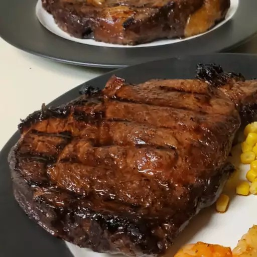

Rib-Eye Recipe

A marinated rib-eye steak recipe!
A good seasoned rib-eye steak recipe to prepare for a family dinner!
Ingredients
- 4(1/2 pound) rib-eye steak
- 1 teaspoon garlic powder, or to taste
- 1 teaspoon onion powder, or to taste
- salt and pepper to taste
- 1 3/4 cups Worcestershire sauce
- 1/3 cup brown sugar
- Vegetable oil for brushing grill
Steps
- Season steaks with garlic powder, onion powder, salt, and pepper; set aside.
- Place Worcestershire sauce and brown sugar into a large resealable plastic bag; seal the bag and shake to mix. Pour 1/2 of the marinade into another large resealable plastic bag. Place 2 steaks in each bag and turn to coat. Squeeze out excess air and seal the bags. Refrigerate for at least 1 hour.
- Preheat an outdoor grill for high heat and lightly oil the grate.
- Drain marinade from the bags into a small saucepan; bring to a boil and cook for 3 to 4 minutes. Set aside.
- Grill steaks on the preheated grill to desired doneness, about 7 minutes per side. Baste often with boiled marinade during the final 5 minutes of cook time. An instant-read thermometer inserted into the center of steaks should read 140 degrees F (60 degrees C) for medium doneness.